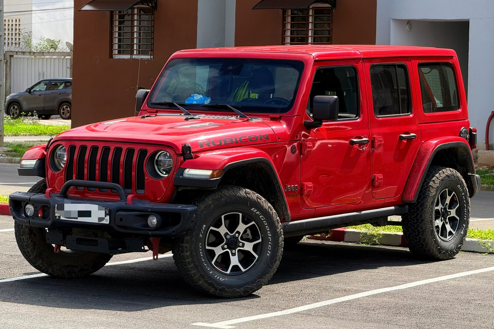

À vendreRubicon
Jeep Wrangler Rubicon 2021
07/2021 · Essence · Automatique · 4×4
28 000 000 FCFA
Prix négociable
Date07/2021
VersionRubicon
BoîteAutomatique
CarburantEssence
IntérieurCuir
DémarrageStart
Transmission4×4
Un 4×4 puissant, robuste et très élégant.
Capteur de signalisation annoncé par le vendeur.